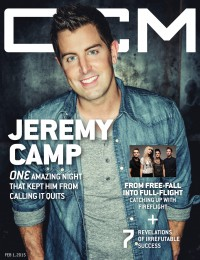

CCM Digital
1 Feb 2015
| Cover |
|---|
|  |
 Online Exclusively Online Exclusively |
| Writers in this Issue |
| Argyrakis, Andy Aspinwall, Grace S. Conner, Matt Greer, Andrew Sparkman, Kevin |
Jeremy Camp
Cover Feature:- "The Art of Following" by Andrew Greer
- ""I Will Follow" Q&A"
- Fireflight by Kevin Sparkman
- Jeremy Camp - I Will Follow (Deluxe Edition) by Grace S. Aspinwall
- P.O.D. - SoCal Sessions by Andy Argyrakis
- Aaron Gillespie - Grace Through The Wandering by Matt Conner
- Hearts Like Lions - These Hands EP by Matt Conner
- Blanca Reyes - Who I Am EP by Andy Argyrakis
- Jill Phillips - Mortar & Stone by Matt Conner
- Bethel Music - We Will Not Be Shaken by Grace S. Aspinwall
- The Katinas - Sunday Set by Grace S. Aspinwall
- various artists - Divine Voices: Pastors of Praise by Matt Conner
- Fred Hammond - I Will Trust by Andy Argyrakis
- Sweet & Lynch - Only to Rise by Andy Argyrakis
- Brittany Jester - Brittany Jester by Matt Conner
- "Welcome to Inspiration"from The Street Sweeper, by Tim Enochs
© 2011 CMnexus. Last updated May 2025. Contact: editor -AT- cmnexus -DØT- org